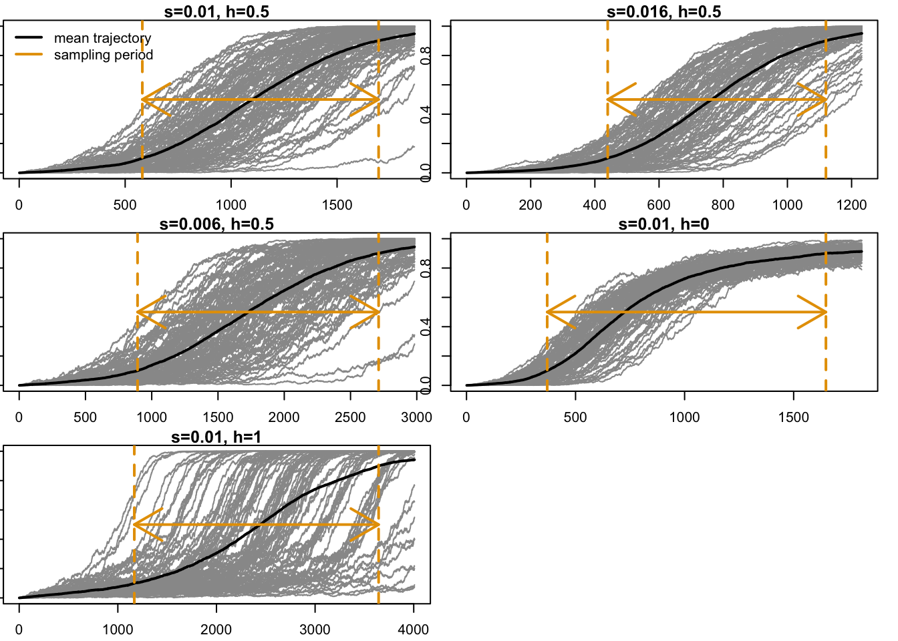
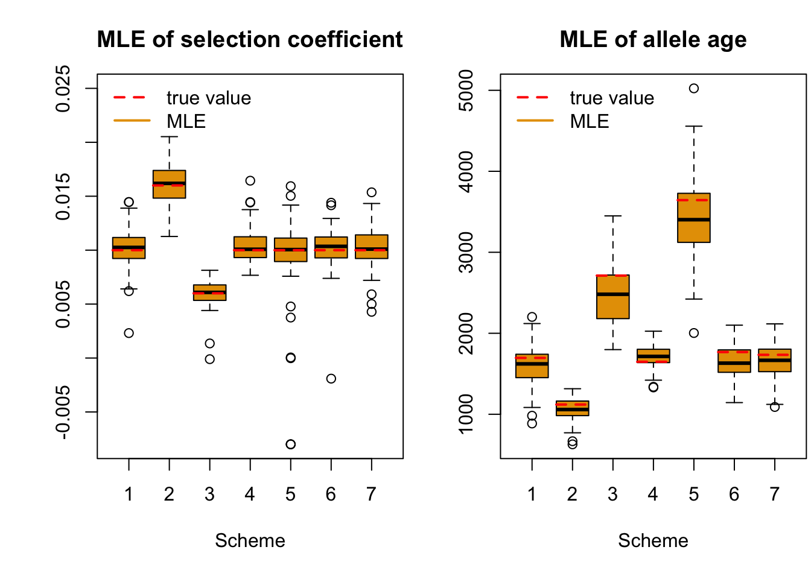

saa)The saa app is a javascript/C++ implementation of the algorithm outlined in this paper. The C++ part is essentially the same as in our original R implementation but written with more care and consideration. The javascript part handles the user interface. The app has been tested in Google Chrome version 101.0.4951.64. Performance on any other browser is not guaranteed. A separate command-line program will be available soon.
The main idea of the paper is to compress generations of the Wright-Fisher process by a factor \(2N_0\), where \(N_0\) is the reference population size in a diploid population, to obtain an approximation by the following Wright-Fisher diffusion \[ dX = 2 s N_0 X(1-X) (1-h-(1-2h)X) \ dt + \frac 1 {\rho(t)} X(1-X) \ dW, \] where
This is commonly known as the diffusion approximation of the Wright-Fisher process. The Wright-Fisher diffusion is conditioned to survive until the last sample time. For a fixed selection coefficient, we can solve the corresponding conditioned Kolmogorov backward equation (KBE) backward in time from the last sample time while weighting by the probability of obtaining mutant counts in samples as time goes backward. This will yield, for a fixed selection coefficient, the likelihood value of all times before the last sample time being the time when the allele originally arose. Of course, this likelihood is 0 after the first time when there is a non-zero mutant count. To obtain the maximum likelihood estimate of both the selection coefficient and the allele age, we perform a standard golden section search (GSS) on an interval of possible values for the selection coefficient.
The user interface is divided into 3 columns:
Time serial sample data must be uploaded in plain text format. It must have no header and have 3 columns. The first column should contain time in units of generations backward from the last sample, meaning the first column of the first row must be 0. The second column should contain the sample size at each sample time. The third column should contain the mutant count at each sample time. The head of the file looks like
0 2 1
6 4 2
9 2 1
17 2 2
25 26 15The optional historical population size data follow the same format but contains only two columns. The first column should contain time in units of generations backward from the last sample. The second column should contain the population size at corresponding times. Each row (t, N) means populations size at time \(t\) changes to \(N\). The head of the file looks like
0 8000
484 4000
984 8000The program does not check for errors in input files, and may crash if supplied with incorrect input files, or nonsense parameters. The app comes pre-loaded with simulated samples from dataset 6 below, but users should obviously update data on their own. No data is uploaded to anywhere. It is simply stored in the web browser and thus will presumably disappear once the browser closes. All computation is done in the browser.
The parameter settings are populated with sensible defaults. The only parameters the user should need to update is \(N_0\) and \(h\). The estimate of the selection coefficient is somewhat insensitive to the value of \(N_0\), but the estimate of the allele age is.
If “Advanced options” is selected, users can set \(n_{substep}\) “number of sub-steps per unit of time”. In the numerical solution to the KBE, we take the size of each time step to be \(1/N_0\), which corresponds to 2 generations per time step. Each time step is further divided into \(n_{substep}\) sub-steps. This is initially set to 20, but increases if during GSS, \(n_{substep}\) is found to be too low for valid numerical solutions.
Estimates are plotted in the centre column. Numbers are displayed at the bottom in the right panel. The plots are updated after each step of GSS. The first step computes for \(s_{max}\), the second step for \(s_{min}\). Typically the computation takes longer for selection coefficients, due to the likely allele age to be much further back in time. At the end of the computation, MLE esimates and 95% confidence intervals are displayed. The 95% confidence intervals are computed using ad-hoc techniques that generate results from computation already performed during GSS. They are meant for illustration only, but should still give some idea about the level of uncertainty in the estimates. For more proper estimation of confidence intervals, we suggest users perform bootstrapping using the command-line program.
For the C++ implementation, we performed simulation studies using the following set of parameters.
| Dataset | \(s\) | \(h\) | number of sample times | sample size | demography |
|---|---|---|---|---|---|
| 1 | 0.01 | 0.5 | 60 | 20 | constant \(N=8000\) |
| 2 | 0.016 | 0.5 | 60 | 20 | constant \(N=8000\) |
| 3 | 0.006 | 0.5 | 60 | 20 | constant \(N=8000\) |
| 4 | 0.01 | 0 | 60 | 20 | constant \(N=8000\) |
| 5 | 0.01 | 1 | 60 | 20 | constant \(N=8000\) |
| 6 | 0.01 | 0.5 | 20 | 60 | constant \(N=8000\) |
| 7 | 0.01 | 0.5 | 60 | 20 | initial \(N=8000\), bottleneck \(N=4000\) in generations \([750, 1250]\) |
The sample paths are generated using the following two R functions.
#' Simulate the Wright-Fisher process
#' @Ntt, @NtN demography information, both vectors of the same length
#' representing time and population size at this time. Population size
#' assumed to be constant between neighbouring times. The last element
#' of Ntt will be the last generation to be simulated.
#' @s selection coefficient
#' @h dominance parameter
sim_wf = function(Ntt, NtN, s, h) {
fitness = c(1, 1-s*h, 1-s)
max_len = tail(Ntt, 1)
repeat {
x = rep(NA, max_len)
N = NtN[1]
x[1] = 1 / 2 / N
i_Nt = 1
for (k in 1:(max_len-1)) {
if (k == Ntt[i_Nt+1]) {
i_Nt = i_Nt + 1;
N = NtN[i_Nt]; #cat("N change to", N, " at ", k, "\n")
}
ff = x[k]
geno_freq = fitness * c(ff*ff, 2*ff*(1-ff), (1-ff)*(1-ff))
geno_freq = geno_freq / sum(geno_freq)
ale_freq = geno_freq[1] + geno_freq[2]/2
x[k+1] = rbinom(1, size=2*N, prob=ale_freq)/2/N
if (x[k+1]==0) {x[(k+1):max_len] = 0; break}
if (x[k+1]==1) {x[(k+1):max_len] = 1; break}
}
if (tail(x, 1)>0) break
}
return(x)
}
#' Generate sample counts from Wright-Fisher process
#' @i_dataset dataset ID, used in the file name
#' @s selection coefficient
#' @h dominance parameter
#' @n_paths number of sample paths to generate
#' @n_samp number of sample times for each path
#' @samp_n sample size at each sample time
#' @k_final final time, should be taken to be large enough
#' @Ntt, @NtN demography information, both plugged into sim_wf
#' @f1, @f2 sample times are equally spaced between the mean trajectory of
#' underlying Wright-Fisher process attaining frequency f1 and f2
gen_samples = function(i_dataset, s, h, n_paths, n_samp, samp_n, k_final,
Ntt, NtN, f1=0.1, f2=0.9) {
x = matrix(NA, nrow=n_paths, ncol=k_final)
for (i in 1:n_paths) {
x[i,] = sim_wf(Ntt, NtN, s, h)
}
mean_path = colMeans(x)
k_first = which(mean_path>f1)[1]
k_last = which(mean_path>f2)[1]
samp_t = round(seq(k_first, k_last, length.out=n_samp))
samp_k = matrix(NA, nrow=n_paths, ncol=n_samp)
keep_flag = rep(FALSE, n_paths)
for (i in 1:n_paths) {
for (j in 1:n_samp) {
samp_k[i,j] = rbinom(1, size=samp_n, prob=x[i, samp_t[j]])
}
keep_flag[i] = (max(samp_k[i,])>=1) & (max(samp_n-samp_k[i,])>0)
}
cat("s=", s, ", h=", h, ", ", length(which(!keep_flag)), " bad samples",
sep="")
save(s, h, x, Ntt, NtN, samp_t, samp_n, samp_k, keep_flag,
file=paste("samples", i_dataset, "/samples.RData", sep=""))
}The sample paths of datasets 1-5 are shown below. Counts data are generated from each sample path using binomial distributions at fixed sample times. In dataset 5, where \(h=1\), there are a significant number of paths whose frequencies are close to either 0 or 1 throughout the entire sampling range. This causes estimation to be more difficult than smaller values of \(h\). As can be seen in the boxplots below, this causes a few paths to yield negative estimates for the selection coefficient.

The boxplots of the MLE estimates of the 100 sampled paths from all datasets are shown below. The result mirrors those in the paper.
